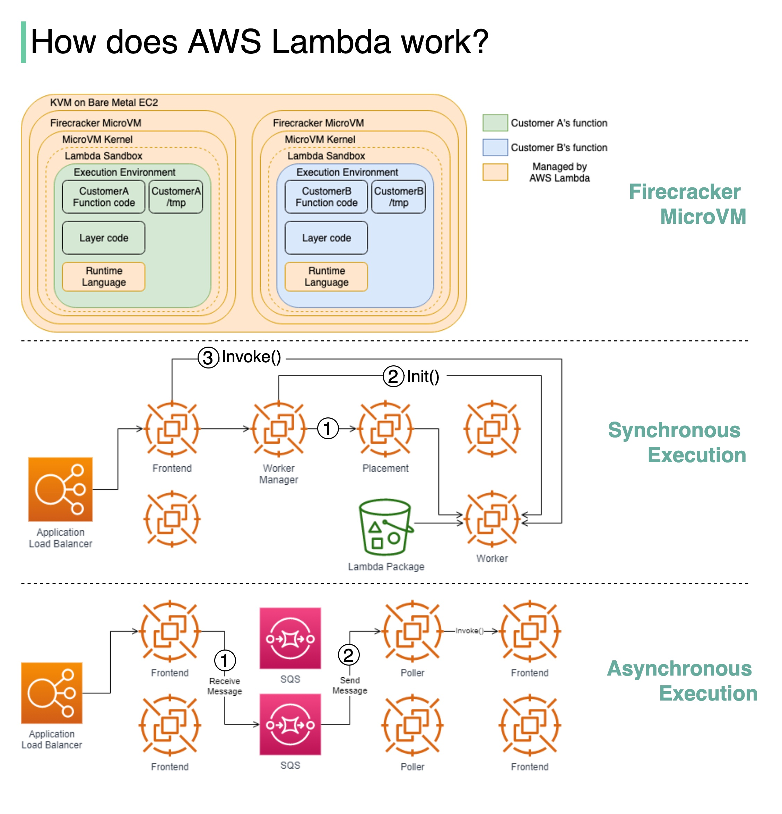

Serverless is one of the hottest topics in cloud services. How does AWS Lambda work behind the scenes?
Lambda is a serverless computing service provided by Amazon Web Services (AWS), which runs functions in response to events.
Firecracker is the engine powering all of the Lambda functions. It is a virtualization technology developed at Amazon and written in Rust.
The diagram below illustrates the isolation model for AWS Lambda Workers.
Lambda functions run within a sandbox, which provides a minimal Linux userland, some common libraries and utilities. It creates the Execution environment (worker) on EC2 instances.
How are lambdas initiated and invoked? There are two ways.
Step1: “The Worker Manager communicates with a Placement Service which is responsible to place a workload on a location for the given host (it’s provisioning the sandbox) and returns that to the Worker Manager”.
Step 2: “The Worker Manager can then call Init to initialize the function for execution by downloading the Lambda package from S3 and setting up the Lambda runtime”
Step 3: The Frontend Worker is now able to call Invoke.
Step 1: The Application Load Balancer forwards the invocation to an available Frontend which places the event onto an internal queue(SQS).
Step 2: There is “a set of pollers assigned to this internal queue which are responsible for polling it and moving the event onto a Frontend synchronously. After it’s been placed onto the Frontend it follows the synchronous invocation call pattern which we covered earlier”.